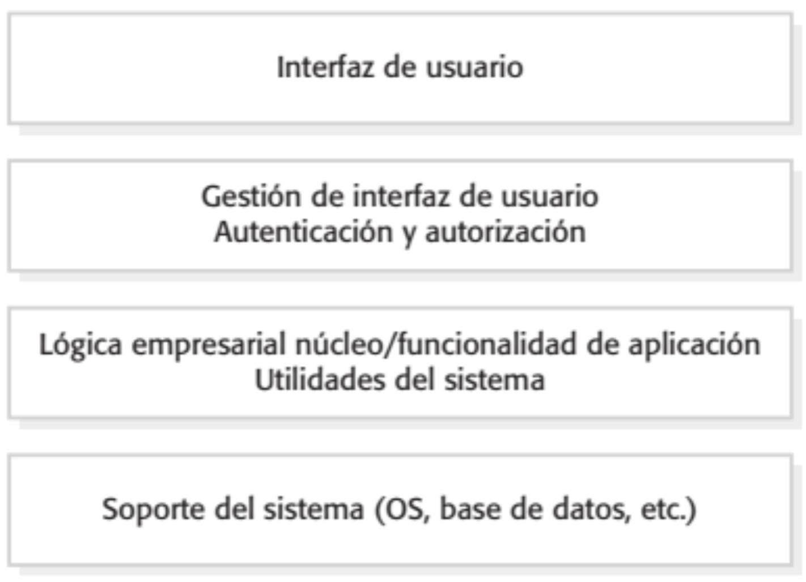
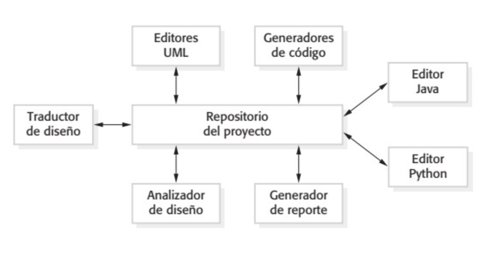
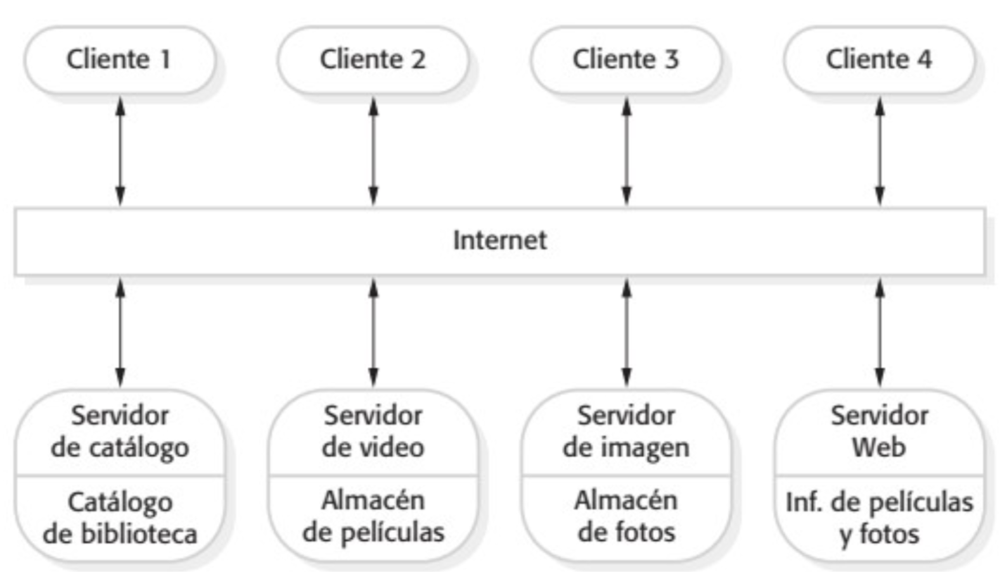
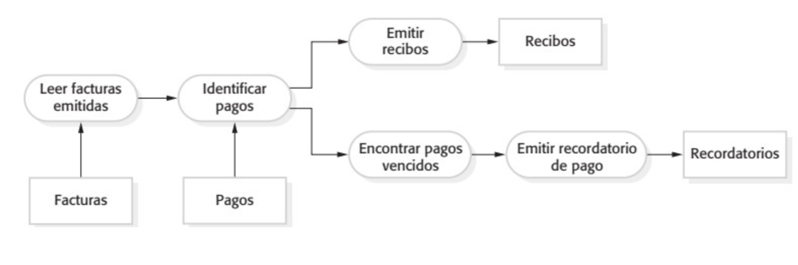

Análisis y diseño de Aplicaciones
Santiago Moreno
Indice
Introducción a la ingeniería de software
El proceso del software
- Para el desarrollo de un producto de software se necesita un conjunto estructurado de actividades
- Existen varios modelos de procesos.
Todos incluyen:- Especificación
- Diseño
- Implementación
- Validación
- Evolución
Clasificaciones
- Procesos dirigidos por planes
- Procesos ágiles
En la practica los procesos incluyen elementos de ambos enfoques
Modelo en cascada

Modelo en cascada - Problemas
Dificultad de responder a los cambios de requerimientos del cliente
Entrega tardía de valor para el cliente
Modelo Incremental
Modelo Incremental - Beneficios
Se reduce el costo de acomodar los cambios en los requisitos
Es más fácil obtener retroalimentación del cliente
Se pueden realizar entregas más rápidas de software
Modelo Incremental - Problemas
Trazabilidad de los cambios
Degradado del sistema
Especificación
- Relevamiento y análisis de requisitos
- Especificación de requisitos
- Validación de requisitos
Diseño
Diseña la estructura del sotware que satisface la especificación
- Diseño de Arquitectura: identificar todas las estructuras del sistema, los principales componentes, sus relaciones y como estan distribuidos.
- Diseño de la base de datos: diseñar las estructuda del sistema de datos y como van a ser representados en la base
- Diseño de la intefaz de usuario: se definen las interfaces ente los componentes del sistema
Implementación
El programa es desarrollado mediante la implementación.
Puede ser un programa único o varios programas.
El diseño y la implementación son actividades por lo general intercaladas
Validación
La validación y verificación pretende mostrar que el sistema se ajusta a su especificación y cumple con los requisitos del cliente
Validación - Etapas
- Pruebas Unitarias
- Pruebas de sistema o integración
- Pruebas de aceptación
Ingeniería de software
Es una disciplina de la ingeniería que se ocupa de todos los aspectos de la producción de software desde las primeras etapas de la especificación del sistema hasta el mantenimiento del sistema una vez que se ha puesto en uso.
Ingeniería de requerimientos
Definiciones
Requisitos
Descripción de los servicios que debe brindar un sistema y sus restricciones
Requisitos definen el Qué (el problema) del sistema
Ingeniería de Requisitos
Proceso de descubrir, analizar, documentar y verificar esos servicios y restricciones
Definiciones
Sistema
Incluye hardware, software, firmware, personas,información, técnicas, servicios, y otros elementos de soporte
Requisitos del Sistema
Son los requisitos para el sistema entero
Requisitos del Software
Se refieren solo al Software
no funcionales
Del producto
Especifican restricciones al comportamiento del producto
Ej: desempeño, confiabilidad, portabilidad, usabilidad
De la Organización
Se derivan de las políticas y procedimientos existentes en la organización del cliente y en la del desarrollador
Estándares, lenguajes de programación, método de diseño
no funcionales
Externos
Se derivan de factores externos, como:
- Interoperabilidad: con otros sistemas
- Legislativos: privacidad, seguridad
- Éticos: dependen del contexto, las personas, etc
Análisis
Casos de Uso
Un caso de uso se compone de:
- Nombre que identifica al caso de uso
- Sinopsis que describe brevemente su objetivo
- Curso típico de eventos que narra la “historia” más común de los actores durante el uso del sistema
- Cursos alternativos de eventos que narran las variantes de uso del sistema
Casos de Uso
| Nombre | Escribir Email |
| Actor | Usuario |
| Descripción | El caso de uso comienza cuando el Usuario desea escribir un correo electrónico. Para ello especifica el cuerpo del correo electrónico y un asunto. Luego si lo desea el usuario puede adjuntar uno o más archivos de su disco duro en el email. Al finalizar de escribir el email el sistema especifica una lista de contactos y el usuario selecciona opcionalmente uno o más destinatarios. Para cada destinatario puede especificar que tipo de destinatario se trata (Principal, Con Copia o Con Copia oculta). Luego el usuario puede elegir más destinatarios escribiendo manualmente sus correos electrónicos y el tipo de destinatario al igual que lo hizo antes. Al finalizar el sistema envía el correo y lo copia en la carpeta ‘Enviados’ |
Modelo de dominio
Modelado de dominio
- Consiste en encontrar y describir los conceptos en el dominio de la aplicación
- Descompone el problema en conceptos individuales
- Se construye el Modelo de Dominio
Modelo de domino
Contenido:
- Introducción Breve descripción que sirve como introducción al modelo
- Conceptos Clases que representan conceptos significativos presentes en el dominio
- Tipos Data types que describen propiedades de las clases que representan conceptos
- Relaciones Relaciones de asociación o generalización entre las clases que representan conceptos
- Diagramas Representaciones (usualmente uno solo) de conceptos, tipos y relaciones presentes en el modelo
Modelo de domino
Conceptos
Un concepto es una idea, cosa o elemento del problema que se está modelando
Es necesario identificar aquellos atributos que permitan satisfacer los requerimientos
Diagramas de Secuencia
Diseño
Diseño de Arquitectura
El objetivo es establecer la estructura global del sistema y cómo se debe organizar
Identificación de los principales componentes del sistema y sus relaciones
Patrones de Arquitectura
Un patrón es una descripción abstracta de buena práctica, que se ensayó y puso a prueba en diferentes sistemas y entornos.
Describe una organización de sistema que ha tenido éxito en sistemas previos.
Incluye información sobre cuándo es y cuándo no es adecuado usar dicho patrón, así como las fortalezas y debilidades del patrón.
Beneficios de utilizar Patrones
Permite seleccionar una solución entendible y probada a ciertos problemas, definiendo los principios organizativos del sistema.
Al basar la arquitectura en estilos que son conocidos se facilita comunicar las características importantes de la misma.
Arquitectura en capas
- Descripción Organiza el sistema en capas con funcionalidad relacionada con cada capa. Una capa da servicios a la capa de encima.
- Cuándo Nuevas facilidades encima de sistemas existentes; desarrollo disperso en varios equipos, y cada uno es responsable de una capa de funcionalidad; requisito de seguridad multinivel.
- Ventajas Permite la sustitución de capas en tanto se conserve la interfaz. Aumentar la confiabilidad, en cada capa pueden incluirse facilidades redundantes (por ejemplo, autenticación).
- Desventajas Es difícil ofrecer una separación limpia entre capas, El rendimiento suele ser un problema.
Arquitectura en capas
Arquitectura de repositorio
- Descripción Todos los datos en un sistema se gestionan en un repositorio central, accesible a todos los componentes del. Los componentes no interactúan directamente.
- Cuándo Grandes volúmenes de información o sistemas dirigidos por datos.
- Ventajas Los componentes no necesitan conocer la existencia de otros componentes. Los cambios se propagan hacia todos los componentes. Gestión consistente y centralizada de los datos.
- Desventajas Problemas en el repositorio afectan a todo el sistema. Posibles ineficiencias en la comunicación. Posibles dificultades al distribuir el repositorio.
Arquitectura de repositorio
Arquitectura de cliente - servidor
- Descripción La funcionalidad del sistema se organiza en servicios, y cada servicio lo entrega un servidor independiente. Los clientes son usuarios de dichos servicios
- Cuándo Se usa cuando, desde varias ubicaciones, se tiene que ingresar a los datos en una base de datos compartida. También cuando la carga es variable (replicación de servidores).
- Ventajas Los servidores se pueden distribuir a través de una red. La funcionalidad general estaría disponible a todos los clientes, no necesita implementarse en todos los servicios.
- Desventajas Cada servicio son puntos de falla. El rendimiento depende de la red, así como del sistema. Posibles problemas administrativos cuando los servidores son propiedad de diferentes organizaciones.
Arquitectura de cliente - servidor
Arquitectura de tubería
- Descripción Cada componente de procesamiento es discreto y realiza un tipo de transformación de datos. Los datos fluyen (como en una tubería) de un componente a otro para su procesamiento.
- Cuándo Se suele utilizar en aplicaciones de procesamiento de datos, donde las entradas se procesan en etapas separadas para generar salidas relacionadas
- Ventajas Fácil de entender y soporta reutilización. El estilo del flujo de trabajo coincide con la estructura de muchos procesos empresariales.
- Desventajas El formato debe acordarse y respetarse. Esto aumenta la carga del sistema, y puede significar que sea imposible reutilizar transformaciones funcionales que usen otros formatos.
Arquitectura de tubería
Planificacion
Planificacion
- Que Que tareas realizar
- Cuándo Cuando se van a realizar. Tener en cuenta dependencias.
- Recursos Se tienen en cuenta los recursos (tiempo, personal, dinero).
Pert
- Diagrama que representa las tareas a realizar
- Relacion de dependencia entre las tareas
- Identifica que tareas no pueden retrasarse, cuales si y cuanto tiempo
- Parte de la base que estan identificados los tiempos y las dependencias
Pert
- Representamos la duracion de cada tarea
- Representamos la fecha mas temprana en la que se puede empezar cada tarea
- Representamos la fecha mas tardia en la que se puede empezar cada tarea
Gantt
- Muy utilizado en la industra de Software
- Representamos las tareas en una linea de tiempo
- No solo manejamos duracion sino que tambien fechas
- No esta optimizado como PERT, pero se puede realizar posteriormente